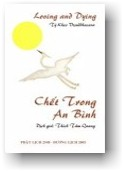

|
BuddhaSasana Home Page |
Vietnamese, with Unicode Times font |
|  |
CHẾT TRONG AN BÌNH Tỳ Kheo Visuddhacara PHẬT LỊCH 2548 – DƯƠNG LỊCH 2004 |
-ooOoo- LỜI TỰA Tôi viết tác phẩm này nhằm chia sẻ một số suy nghĩ về cái chết với bất cứ ai quan tâm muốn tìm hiểu về cái chết. Suy nghĩ về cách chúng ta có thể trực diện với cái chết – bằng can đảm và tính thanh thản, có phẩm cách. Và nếu bạn muốn bằng một nụ cười. Suy nghĩ về cách đương đầu với khổ đau, cách sống bằng trí tuệ và lòng từ bi, hay bằng nhiều thứ về điều đó mà chúng ta có thể tập trung được cho đến khi chúng ta chết. Nhưng thường thường người ta không thích nói về cái chết. Bất cứ lúc nào vấn đề này được đề cập, người tạ bắt đầu cảm thấy khó chịu. Ðặc biệt được coi là cấm kỵ không được nói đến vào những dịp tốt lành như sinh nhật hay Năm Mới. Làm như đề cập đến từ chết vào những dịp tốt lành có thể gây tai hại và mang lai vận rủi hay chết sớm! Ðương nhiên, tôi không đồng ý với những ý tưởng như thế. Với tôi, điều đó chỉ là dị đoan. Tôi có thể hiểu dù cho người ta coi vấn đề về cái chết trong những dịp tốt lành là không ý nhị. Nhưng tôi cho rằng nghẫm nghĩ về cái chết và cả đến những dịp như sinh nhật và Năm Mới là tốt và đúng, có lẽ nên suy ngẫm nhiều hơn nữa vào những dịp như vậy. Tại sao? Bởi vì chúng ta có thể xét thấy chúng ta không phải ngày một trẻ lại mà ngày một già đi và cứ mỗi năm trôi qua mang chúng ta đến gần nhà mồ. Trong suy ngẫm như thế, chúng ta có thể đánh giá lại đời sống mình, thẩm xét lại vị trí của mình và xem xét liệu chúng ta có đi đúng hướng hay không - hướng của trí tuệ và từ bi. Là một nhà sư, tôi thường trầm tư (thiền) về cái chết. Việc này nhắc nhở tôi sống một cuộc đời có ý nghĩa hơn, không uổng phí ngày giờ vô ích dù tôi phải thú nhận tôi vẫn còn thỉnh thoảng lãng phí thì giờ quý báu; vì như quý vị biết cái tâm đôi khi rất bướng bỉnh và lười biếng. Tuy nhiên bởi suy ngẫm thường xuyên về cái chết, tôi luôn nhớ rằng tôi phải tìm ra nhiều thì giờ hành thiền tuệ giác hơn nữa để tôi có thể thanh lọc tâm ra khỏi những ô nhiễm của tham sân và si. Ðức Phật khuyên chúng ta nên thường xuyên suy ngẫm về cái chết, hàng ngày hay vào bất cứ lúc nào. Nó sẽ khơi dậy trong chúng ta sự tỉnh thức – ý thức cấp bách để phấn đấu tích cực hơn nữa nhằm loại bỏ khổ đau do tâm ô nhiễm và bị lừa dối mang lại. Tôi thích nói về cái chết. Ðó là đề tài sở thích của tôi. Phải chăng tôi bệnh hoạn? Cũng được đi - Cứ tiếp tục. Bạn có thể nói tôi bệnh hoạn và gì đi nữa tùy bạn. Không sao cả. Tôi không bận tâm. Người ta, có nghĩa không chỉ có tôi mà cả bạn nữa, phải thừa nhận nhân quyền căn bản được bầy tỏ quan điểm và cảm nghĩ miễn là bầy tỏ như vậy một cách chính đáng, đồng cảm, không bị áp đặt và bất bạo động. Không ai có thể giận dữ với một người vì việc bầy tỏ bằng cách thức như vậy, dù không may là đôi khi chúng ta quên và trở nên nóng nảy. Nhưng trở lại với đề tài này, tôi luôn cân nhắc, tôi luôn băn khoăn và vẫn đang băn khoăn: Tại sao chúng ta sống? Tại sao chúng ta chết? Tất cả cái đó là gì? Cái đó để làm gì? Cho mục đích gì? Vì cứu cánh gì? Chắc chắn nhiều câu trả lời đã được đề nghị. Tôi chắc chắn có nhiều người rất vui vẻ cho tôi những câu trả lời về những câu hỏi này từ khi con người biết suy nghĩ và cân nhắc. Nhưng tôi không thể nói là tôi đã thỏa mãn với tất cả những câu trả lời được đưa ra. Tôi vẫn còn đang tìm kiếm. Trong những ngày này tôi đã trở thành một nhà sư Phật Giáo và hành thiền. Tôi nguyện giữ năm giới không giết hay làm hại, không trộm cắp hay lừa đảo, không phạm tội gian dâm như ngoại tình, không nói dối và không dùng rượu hay ma túy. Thêm nữa là một nhà sư, tôi phải tuân thủ cuộc sống độc thân và những giới khác của một nhà sư. Tôi không thể nói cho đến nay tôi đã tìm thấy tất cả những câu trả lời đối với những câu hỏi của tôi, nhưng tôi đã tìm thấy sự an ủi, sự thoải mái nào đó trong giáo hệ của Ðức Phật. Tôi có thể nói hiểu lời dạy của Ðức Phật về chánh niệm và từ bi. Và tôi vẫn thiền. Có lẽ tôi có thể tìm thấy tất cả câu trả lời vào một ngày nào đó. Sẽ rất tốt đẹp nếu tôi có thể. Nhưng nếu tôi không làm được, thì cũng không sao. Những vấn đề nào mà tôi đã thử thách. Tôi sẽ rất sung sướng dù cho tôi phải thử chết. Vì dẫu sao thì tôi cũng đã thử. Bằng cách đó đời sống của tôi vẫn còn có ý nghĩa, ít nhất là ở mức độ nào đó. Và đương nhiên theo đường lối này, tôi sẽ cố gắng truyền bá càng nhiều càng tốt sự vui vẻ và hạnh phúc theo khuynh hướng và khả năng của tôi. Tôi đã cố gắng viết cuốn sách này để chia sẻ sự hiểu biết giới hạn của tôi về cuộc sống và cái chết. Tôi cảm thấy chúng ta cần thảo luận vấn đề cái chết một cách thẳng thắn. Chúng ta không nên sợ đưa đề tài này ra. Nếu không, làm sao chúng ta có thảo luận và học hỏi được? Khi chúng ta có thể thảo luận công khai, học hỏi và hiểu biết, điều đó rất tốt vì chúng ta có thể đi đến chấp nhận cái chết. Chúng ta có thể biết cách đối phó với nó tốt hơn. Ðiều này rất quan trọng; vì lý do đơn giản là tất cả chúng ta đều phải chết. Không ai có thể thoát khỏi. Và nếu chúng ta không thể hiểu cái chết ngay bây giờ, làm sao chúng ta có thể hiểu vấn đề đó khi chúng ta nằm trên giường lúc lâm chung, vào lúc sắp thở hơi cuối cùng? Phải chăng chúng ta thể vượt qua được sợ hãi và bối rối? Cho nên tốt hơn là chúng ta học hỏi tất cả về cái chết ngay từ giờ. Chắc chắn điều đó sẽ rất có ích cho chúng ta. Vậy chúng ta không cần sợ hãi nữa. Chúng ta sẽ có lòng tin, và khi cái chết đến chúng ta có thể ra đi với nụ cười. Chúng ta có thể nói: "Tử Thần, cứ làm điều xấu nhất đi. Ta biết mi rồi và ta có thể mỉm cười". Tôi đã viết tác phẩm này một cách thẳng thắn và hấp dẫn theo khả năng. Tôi đã cố gắng để nó không quá học thuật hay cứng nhắc. Tôi chỉ muốn quý bạn vui vẻ đọc cuốn sách này, khúc khích cười những phần có thể đáng cười và có thể học được một hay hai sự việc có thể giúp ích cho bạn trong cuộc sống, tình thương và chết chóc. Ngoài ra tôi không viết thiên về tư cách một tu sĩ với một người không chuyên môn mà là cách nói của con người với con người. Cho nên tôi đã viết hoàn toàn tự do vói mục đích truyền cảm, đi vào lòng người. Mặc dầu tôi không thể nói tôi đã thành công hay thất bại đến đâu! Chỉ quý bạn sẽ là sự phán xét tốt nhất về điều đó. Vì tôi là một nhà tu Phật Giáo, độc giả sẽ thấy nội dung có nhiều chuẩn tắc đạo đức và khái niệm Phật Giáo. Ðương nhiên, một số giá trị như tình thương và từ bi là phổ biến. Chúng không thuộc về một tôn giáo nào cả mà thuộc về tất cả. Tất cả các tôn giáo đều dạy tình thương và từ bi. Chúng đều là những tôn giáo tốt. Nhưng chính chúng ta những tín đồ lại không tuân theo. Cho nên chúng ta giết, làm thương tổn, và gây tác hại dưới danh nghĩa tôn giáo. Ai là người đáng trách ngoài chúng ta ra! Không phải tôn giáo hay những khai sáng ra tôn giáo bao giờ cũng thuyết giảng tình thương, trí tuệ, và lòng khoan dung, tha thứ và từ bi sao. Nếu chúng ta có thể tỉnh thức trước sự ngu si của chúng ta thì chúng ta có thể thương yêu thật tình. Chúng ta có thể sống như anh chị em với độ lượng, kiên tâm và thông cảm, với tình thương và từ bi. Tôi viết tác phẩm này chủ yếu là cho Phật tử. Nhưng những người không phải là Phật tử có thể đọc và tìm thấy một số lợi ích, một số lãnh vực đồng thuận, đánh giá đúng và hiểu biết chung. Tối thiểu, họ cũng biết đến quan điểm của Phật Giáo, cách giải quyết vấn đề và trí tuệ của Phật Giáo. Ðiều bổ ích là biết quan điểm của nhau, nó dẫn đến độ lượng hơn, thông cảm hơn và đánh giá đúng cách giải quyết và niềm tin của người khác. Về phần tôi, tôi không có một chút ý thích nào nhằm đổi đạo của người khác. Việc đó phải thật rõ ràng. Hãy để cho mọi người thực hành tôn giáo của riêng họ và hãy để cho họ rèn tập tốt tôn giáo của họ, như người trúng giải thưởng Hòa Binh Nobel, Ngài Ðạt Lai Lạt Ma đã nói từ bi rốt cuộc là cốt lõi của tất cả tôn giáo. Tôi đã cố gắng chia sẻ sự hiểu biết của tôi trong khả năng tốt nhất của tôi. Nhưng tôi chắc chắn sẽ có một số khuyết điểm ở chỗ này chỗ kia. Hay ở một số lãnh vực có thể có những khác biệt trong việc giải thích hay hiểu biết. Rất có thể bạn không thích hay không đồng ý với một số sự việc tôi nói. Hay bạn có thể không thích cách tôi diễn đạt. Bạn có thể nghĩ điều đó không thích hợp, khiếm nhã, vô tình, ủy mị, khó chịu, méo mó, vô lý, hay gì đi nữa. Cũng được đi. Ðiều này là tự nhiên. Chỉ cần có hai người là sẽ có những bất đồng ý kiến. Bạn chỉ cần không chấp thuận những điều bạn không đồng ý, bác bỏ chúng ấy là nói vậy. Bạn không cần phải chấp nhận mọi điều tôi nói. Tại sao bạn phải chấp nhận? Ðương nhiên bạn có một tâm tốt của mình, và bạn có thể nghĩ và quyết định cho chính bạn. Chúng ta có thể đồng ý hay không đồng ý mà không bối rối hay giận dữ. Chúng ta có thể đồng ý hay không đồng ý mà vẫn giữ được tình bằng hữu. Phải chăng chúng ta không thểâ? Ðó là việc tuyệt vời nhất, cái tinh hoa của sự trưởng thành tinh thần. Vì mỗi người chúng ta quyết định một cách thành thực và ngay thẳng cho chính chúng ta những điều chúng có thể hiểu và những điều chúng ta không thể hiểu. Chúng ta không cần phải tin mọi thứ hay bất cứ thứ gì. Chính Ðức Phật đã nói tốt hơn là phải xem xét cẩn thận, điều tra nghiên cứu và kiểm tra cho chính chúng ta trước khi chấp nhận một điều gì. Ngay cả đến những lời của Ðức Phật cũng phải được kiểm tra kỹ lưỡng. Rốt cuộc, Ðức Phật không ngoại trừ điều nào cả. Ngài không bao giờ tin trong niềm tin mù quáng. Ngài không bao giờ bảo chúng ta chỉ tin vào điều Ngài nói hay chỉ bác bỏ điều người khác nói. Mà Ngài bảo chúng ta hãy điều tra nghiên cứu, thực hành và minh định cho chính chúng ta. Nếu chúng ta thấy điều gì tốt, điều ấy là điều thiện, lành mạnh dẫn đến loại bỏ tham sân si, thì chúng ta chấp nhận. Nếu không, chúng ta bác bỏ. Ðó là một lời khuyên tuyệt hảo. Cho nên lấy ý của Ðức Phật, tôi bao giờ cũng thích nói: Không tin vào điều gì cả. Nhưng hãy suy nghĩ, thực hành và minh định cho chính mình. Với tôi đó là cách giải quyết tốt nhất và an toàn nhất. Nhưng về bất cứ lỗi lầm nào trong phần trước tác cuốn sách này, tôi xin lỗi và xin được tha thứ. Nguyện cầu tất cả chúng sinh đều hạnh phúc. Chúc cho chúng ta tìm được trí tuệ và hạnh phúc mà chúng ta đang tìm kiếm theo con đường riêng của từng người; và vui đọc sách! ---*--- XIN CHÀO TỬ THẦN, Một ngày nào đó khi tôi chết, vì tôi phải chết, tôi muốn chết với một nụ cười trên môi. Tôi muốn ra đi bình thản, muốn chào tử thần như một người bạn, có thể nói vui vẻ: "Xin chào Tử Thần, Chào Từ Biệt Cõi Ðời". Tôi có thể tưởng tương chính tôi có một cuộc đối thoại với tử thần. Có lẽ có thể như thế này: "Chào Thần Chết! Mi có khỏe không? Ta đã chờ đơi ngươi từ lâu. Suốt đời ta mong mỏi ngươi đấy. Phải chăng rốt cuộc ngươi đang đến với ta? Ðã đến giờ ta phải ra đi rồi phải không? "Ðúng, đúng, Tử Thần! Ta đang đến đây. Hãy kiên nhẫn. Ta đã sẵn sàng. Ngươi không biết ta là gì? Từ lâu ta đã dự tính chào ngươi bằng một nụ cười. Phải, Tử Thần à, ta hiểu. Ngươi không phải xin lỗi. Ta biết ngươi có việc phải làm. Ta không có gì chống lại ngươi cả. Không có cảm nghĩ khó chịu. Không có gì là riêng tư, ta hiểu. "Như ta đã nói, Tử Thần à, suốt đời ta mong đợi lúc này. Ðể xem liệu ta có thể gặp ngươi với một nụ cười không. Ít ra cũng để xem liệu ta có hứng trong cái chết không, nếu không có hứng ở trong cõi đời. Bây giờ ngươi đang cho ta cơ hội này và ta cảm ơn ngươi về điều đó. "Phải, ta đã nghe rất nhiều về ngươi. Ngươi không đợi ai. Ngươi đến như một tên trộm ban đêm. Ngươi không mặc cả với một ai. Ngươi không chấp nhận câu trả lời "không". Tử thần, được rồi. Ta sẽ đến với ngươi một cách vui vẻ. Ta đã mệt rồi. Tấm thân này như một cái vỏ vỡ. Nó đã rệu rã. Nó đã sống lâu hơn thời gian nó được sử dụng. Như ngươi thấy, ta đã sẵn sàng kề cái chết. Và ta đã chịu đựng tất cả sự đau đớn này, cố gắng mỉm cười với tất cả khách đến mời gọi ta. Tử thần, nói thật với ngươi, lẽ ra ngươi phải đến sớm hơn. Xét cho cùng sự đau đớn này, ngươi là khoảng thời gian thoải mái như của trời cho. Nhưng nói đủ rồi. Tử Thần, không lần lữa nữa. Nào lên đường. Hãy cầm tay ta." Và ta phải đi như ta thường mơ ước với nụ cười trên môi. Cách chết đẹp đẽ biết là nhường nào! Tất cả những người xúm quanh tôi không cần phải khóc. Họ vui vẻ vì thấy tôi đang mỉm cười. Họ sẽ biết tôi được lắm chứ. Cái chết chẳng là cái gì mà phải sợ hãi. Hãy đối xử với cái chết như một người bạn. Hãy sẵn sàng nói lời chào tử thần và chào từ biệt cõi đời. Ðương nhiên không ai được miễn trừ trước cái chết. Tất cả chúng ta phải chết. Như Ðức Phật đã nói: Ðời sống mong manh và cái chết là điều chắc chắn. Trong khi chúng ta sống chúng ta đau khổ khi chia lìa xẩy tới với cái chết của một người thân. Cả hai ông bà tôi đều đã chết. Tôi không nhớ ông nội tôi. Ông chết lúc tôi còn rất trẻ. Nhưng tôi nhớ bà nội tôi. Bà rất ân cần với tôi. Bà cũng rất nghèo khổ. Bà thích sống ở miền quê trong khi cha mẹ tôi lại sống ở thành thị. Tôi nhớ một lần bà đến thăm chúng tôi, tôi xin bà năm xu. Lập tức bà lấy ngay ví tìm ra năm xu và đưa cho tôi. Vào thời đó có thể mua đồ với năm xu:Bạn có thể mua được một cục nước đá hay một ly nước đá với năm xu. Nếu bạn muốn uống nước dừa do người da đỏ bán bạn có thể mua được hai ly nước dừa với năm xu! Và với năm xu bạn có thể mua được năm cái kẹo. Cha tôi chết lúc tôi mười tuổi. Tôi nhớ có đến thăm cha tôi lần cuối vào một đêm tại Bệnh Viện Ða Khoa, Cha tôi nằm chết tại đấy vì bệnh lao và các biến chứng khác. Tôi nhớ mẹ tôi nói với cha tôi: "Này Beh, đây là con Johnny đến thăm" Cha tôi không nói được. Ông thở qua ống dưỡng khí ở mũi. Ông dường như nhìn tôi một cách yếu ớt. Tôi còn nhỏ. Tôi không biết gì về cái chết, nhưng bây giờ tôi biết khá hơn. Bà mẹ tội nghiệp của tôi đau khổ. Bà đã chứng kiến quá nhiều cái chết và đã có một đời sống cực kỳ khó khăn từ hồi còn trẻ. Chắc chắn, đời sống không phải là thảm hoa hồng với bà. Một trong những người anh em tôi chết khi còn nhỏ. Một người anh em khác chết lúc 23 tuổi cùng với vị hôn thê. Ðó là một thảm kịch. Hai người bị chết đuối. Tôi vẫn còn nhớ nhìn thấy xác của họ tại nhà quàn. Mẹ tôi than khóc lòng đau xót. Thật là đau đớn cho bà vì mất một đứa con trai thân yêu một cách bi thảm như vậy. Tôi hoàn toàn choáng váng và không biết làm gì để hiểu được điều này. Lúc đó tôi đã 16 tuổi. Tôi cố gắng ra vẻ thờ ơ, vô tình. Tôi gắng cầm nước mắt. Tôi nói và xử sự như không có gì xẩy ra và như thể cái chết với tôi là chuyện hàng ngày, không cần phải sầu thảm. Tôi coi điều đó là không quan trọng và cố tỏ ra vẻ lạnh lùng. Nhưng lúc một mình, tôi khóc. Tôi khóc một cách đắng cay. Sau lễ mai táng tôi quay trở lại nghĩa địa. Tôi đi vòng vòng trong nghĩa địa đầu nặng trĩu. Tôi đào đất và trồng hoa chung quanh mộ của anh tôi và mộ người yêu dấu của anh. Tôi khắc vào cây thánh giá bằng gỗ những chữ sau: "Không tình yêu vĩ đại nào bằng tình yêu của một người đã chịu hy sinh thân mình vì bạn", vì anh tôi đã chết trong khi cố gắng cứu người vợ chưa cưới. Và tôi nói với Thượng Ðế .Tôi hỏi Ngài: "Hỡi Ðức Chúa Trời, Sao Ngài cư xử với tôi thế này? Tại sao Ngài bắt anh tôi? Phải chăng đó là ý muốn hay lòng khát khao của Ngài? Nếu thế, xin để ý muốn của Ngài được thực hiện. Tôi chấp nhận việc đó". Vì các bạn thấy lúc đó tôi là một người Cơ Ðốc Giáo tốt. Và ý muốn của Thượng Ðế phải đi trước tất cả mọi việc khác. Không được nghi hoặc. Nhưng bây giờ tôi là một Phật tử, tôi tin là tôi hiểu hơn một chút. Phải, không có Thượng Ðế nào bắt anh tôi. Nếu chúng ta chấp nhận sự sống, chúng ta phải chấp nhận cái chết. Chết là phần thiết yếu của sự sống. Như Ðức Phật đã nói, chính vô minh đã làm cho vạn vật trong vòng khổ đau, và chúng ta cứ trôi lăn hết kiếp này đến kiếp khác theo những hành vi của chúng ta. Thiện mang điều lành và ác mang điều xấu. Tôi phải thú thật rằng tôi có thể hiểu rõ hơn với cách Ðức Phật nhìn vào mọi sự. Sau này trong cuộc sống tôi chứng kiến nhiều cái chết hơn. Là một nhà báo, tôi đã nhìn thấy xác những người chết vì tai nạn, băng đảng đánh nhau, tự tử, độc dược vân vân... Tôi đã viết những chuyện bi kịch, cảm xúc hay bi thảm về người ta chết ra sao. Có một người hôn đứa con gái nhỏ từ biệt rồi tự bắn vào đầu mình. Có một cặp trai gái thỏa thuận cùng nhau tự tử trên giường của một khách sạn. Người con gái chết vì thuốc độc họ mang theo, người con trai thoát chết. Và có tên cướp khét tiếng bị bắn chết bởi Cảnh Sát vào Ngày Tết. Tên cướp này bị theo dõi nên đã không thể sống để nhìn thấy hết ngày đầu năm mới. Nhưng đối với tôi đó chỉ là một câu chuyện nữa. Tôi chưa bao giờ nghĩ sâu xa về cái chết. Tôi hoàn toàn bị tê liệt bởi nó. Tất cả tôi muốn là câu chuyện hay được đặt trên trang nhất của tờ báo. Hầu như không có cảm nghĩ hay tình thương trong tôi đối với những nạn nhân tội nghiệp. Tôi quả là một người nhẫn tâm và ích kỷ chỉ chú trọng đến phúc lợi của mình. Mãi sau này, là một nhà sư, tôi đã gặp những cái chết – vào lúc này tôi thấy nhiều cảm nghĩ và từ bi hơn. Khi tôi thăm người bệnh tôi thông cảm với họ. Tôi cố gắng hết mình để an ủi họ. Với những người Phật Tử, tôi tụng kinh, những bài kinh Phật. Tôi nói với họ câu Ðức Phật dạy: Thân bệnh nhưng đừng để tâm bệnh. Chúng ta có thể không làm được gì nhiều cho thân nhưng chúng ta có thể làm được gì đó cho tâm. Chúng ta có thể giữ tâm bình tĩnh khi chúng ta đau yếu. Chúng ta có thể chú tâm. Chúng ta có thể theo dõi sự tăng giảm của đau đớn, nó đến và đi từng đợt như thế nào. Chúng ta có thể hiểu biết bản chất của khổ đau. Chúng ta có thể gặp nó và học hỏi từ nó. Chính đó là một cuộc thử nghiệm – làm sao chúng ta hiểu rõ bản chất của sự sống, làm sao chúng ta hiểu rõ rằng không có cái ngã thường còn nơi đây mà chỉ có sự thay đổi liên miên của sinh và diệt, giống như dòng sông trôi chảy bất tận; làm sao chúng ta hiểu rõ chính cái vô minh, tham ái, luyến chấp, giận hờn, sợ sệt vân vân của chúng ta là nguyên nhân của khổ đau. Bằng sự hiểu biết đó chúng ta có thể đứng lên đón nhận cái đau đớn. Chúng ta có thể coi điều đó là việc bình thường. Chúng ta có thể giữ bình tĩnh và ôn hòa. Thậm chí không một chút gì ngã lòng. Ðúng chúng ta có thể mỉm cười, ngay cả lúc đau đớn. Chúng ta có thể nói: "Này đau đớn, mi thật tình muốn ta chết phải không? Người khác có thể gục ngã với mi nhưng với ta thì không. Ta đã được huấn luyện và sắt đá với mi. Ðức Phật dạy ta nên đáp lại mà không giận dữ hay ghét bỏ. Cho nên ta cố gắng đáp lại mi không giận dữ hay ghét bỏ. Ta hiểu rằng bằng chánh niệm và an lạc trong tâm ta, ta có thể vượt lên mi. Ta có thể cười mi. Mi dạy ta đời là khổ đau. Nhưng mi cũng dạy rằng ta có thể vượt lên mi." Và bạn có thể mỉm cười trước cơn đau. Bạn sẽ cảm thấy khỏe hơn ngay lập tức. ---*--- Cuộc sống hầu như là bèo bọt Adam Gordon ---*--- HAI QUYẾT TÂM Khi tôi viết những dòng này, tôi nhớ lại mới hôm qua một nhà sư bạn tôi chết. Ông bị ung thư giai đoạn cuối cùng đã tám tháng. Khi tôi ở bên cạnh ông tại bệnh viện một vài ngày trước khi ông chết, ông đang ở trong cơn đau đớn. Tôi cố gắng đút cho ông ăn một chút canh nhưng ông không ăn được. Ông trông rất hốc hác và khủng khiếp. Ông hầu như không nói được. Bênh ung thư đã tàn phá thân thể ông và không phải là một nhiệm vụ dễ dàng để chịu đựng cho tinh thần của ông. Tôi cố nài ông lưu ý quan sát cái đau đớn như ông thường làm trong lúc hành thiền, để càng giữ được bình tĩnh và thanh thản càng tốt. Ông là một người thiền định vững vàng và tôi chắc chắn ông đã thiền về chính phút cuối cùng này. Tôi nhớ lại một dịp khác khi tôi đến thăm một ông già khả ái bị bênh bạch cầu. Ông cũng ở trong cơn đau đớn. Ðau đớn hiện trên nét mặt ông. Có những giọt mồ hôi trên trán và mặt ông. Tôi lấy cái khăn và nhẹ nhàng lau mồ hôi cho ông. Tôi ghé vào tai ông thì thầm cố gắng làm cho ông giảm đau. Ông này cũng là người hành thiền và tôi lại nhắc nhở ông giữ chánh niệm quan sát cái đau càng điềm tĩnh càng tốt. Tôi cảm thấy vui khi nhìn thấy vẻ đau đớn biến mất trên mặt ông. Một lúc sau đó thân nhân đến và tôi ra về. Một vài giờ sau, ông chết. Tôi vui vì đã có thể giúp ông một chút trước khi ông tắt thở. Mặc dù có hạnh phúc trong cuộc sống, nhưng vẫn có khổ đau. Hạnh phúc hình như rất phù du – nó ra đi không đợi chờ chỉ để rồi được thay thế bằng phiền muộn và bất mãn. Bởi vì sự sống kết thúc bằng cái chết nên tự nó là một thảm kịch. Có người nói đời sống giống như một củ hành: bạn bóc nó làm chảy nước mắt. Ðức Phật nói sinh là khổ đau vì sinh dẫn đến suy tàn và chết. Chúng ta nên hiểu rõ điều này. Nếu chúng ta chấp nhận sự sống chúng ta phải chấp nhận cái chết. Nếu chúng ta muốn khóc khi người nào đó chết thì chúng ta cũng nên khóc vào lúc người ấy ra đời. Vào lúc đứa trẻ sinh ra thì mầm mống của cái chết đã ở trong nó. Nhưng chúng ta lại mừng rỡ khi đứa trẻ được sinh ra. Chúng ta cười và chúc mừng cha mẹ đứa trẻ. Nếu chúng ta hiểu sinh – nó phải dẫn đến cái chết – thì khi cái chết đến chúng ta có thể đối mặt với nó bằng một nụ cười. Nhìn con người chết trong đau đớn ra sao, thân thể của họ bị suy sup vì bệnh, và thấy tất cả đời sống phải kết liễu bằng cái chết (sự việc đó đã làm cho tôi hiểu mỗi lần đi đến nhà quàn để tụng kinh), hai quyết tâm phát sinh trong tâm tôi: Trước nhất, đến lúc tôi chết, tôi muôn chết với một nụ cười trên môi. Tôi muốn tôi có thể giữù chánh niệm và được thanh thản. Nói một cách khác tôi muốn giữ bình tĩnh. Tôi muốn có thể vẫn mỉm cười dù cái đau đớn nó hành hạ tôi đến thế nào đi nũa. Tôi muốn tôi có thể mỉm cười với tất cả khách khứa đến thăm viếng tôi. Tôi muốn tôi có thể mỉm cười với tất cả các bác sĩ và y tá tốt bụng săn sóc tôi. Tôi muốn tôi có thể mỉm cười với những bệnh nhân bạn tôi để giúp họ làm bất cứ cách nào có thể ở bênh viện, hoặc để truyền cảm hứng hoặc để an ủi. Thay vì những bác sĩ và y tá hỏi tôi có khỏe không, tôi muốn hỏi họ: "Bác sĩ có khỏe không? Chị có khỏe không? Hôm nay quí vị thế nào? Quí vị biết không quí vị đang làm một công việc cao cả. Chúng tôi rất may mắn có quý vị. Xin tiếp tục công việc tốt đẹp này. Xin cảm ơn quý vị nhiều." Và với những khách là Phật tử, tôi sẽ nói Phật Pháp. Tôi sẽ nói: Hãy nhìn tôi. Tôi sắp chết rồi. Kết thúc rồi! Quý bạn biết đấy hành thiền lúc sắp chết không phải là dễ. Vậy nên trong khi bạn còn khỏe hãy cố gắng tận dụng điều đó. Hãy hành thiền! Hãy thực hành Pháp! Không còn hối hận sau này. Ðừng đợi đến lúc bạn đau nặng thì đã quá trễ. Nhưng nếu ngay bây giờ bạn thực hành thiền, khi bạn bệnh, bạn sẽ không bị khó khăn nhiều lúc phải đối phó với cơn đau. Bạn có thể quan sát nó và thậm chí vượt qua nó. Các bạn biết đấy, Ðức Phật bảo chúng ta rằng mọi thứ đều vô thường. Nếu chúng ta hành thiền chăm chỉ đầy đủ, chúng ta có thể hiểu được sự thật về vô thường sâu xa hơn, như vậy chúng ta sẽ không bị trói buộc vào tâm và thân này. Chúng ta biết chắc chắn thân này không phải của chúng ta, tâm này cũng chẳng phải của chúng ta. Hiểu biết, chúng ta có thể buông bỏ. Chúng ta sẽ không bị trói buộc vào vào những dục lạc thô thiển của sự sống. Chúng ta có thể sống một cách khôn ngoan hơn. Chúng ta về già một cách thanh nhã. Và chúng ta không cần sợ chết. Ðức Phật nói khổ đau gắn liền với đời sống. Và chúng ta phải học hỏi cách sống với nó và vượt qua nó. Chỉ bằng cách áp dụng chánh niệm vào cuộc sống hàng ngày và hành thiền chúng ta có thể thâm nhập vaò chân lý của khổ đau. Khi chúng ta hiểu được khổ đau một cách sâu xa, chúng ta sẽ tranh đấu để loại bỏ nguyên nhân của nó, đó là tham ái, bị trói buộc vào đời sống, vào sức cám dỗ của những cảnh tượng vui thích, âm thanh dịu dàng, những mùi vị dễ chịu, và những đụng chạm êm đềm. Chúng ta sẽ cố gắng thanh tịnh tâm trước tất cả các ô nhiễm. Theo Ðức Phật, khi tâm chúng ta được tẩy sạch tham sân và si, chúng ta sẽ vượt qua được tất cả khổ đau. Chúng ta sẽ không bao giờ phản ứng lại bằng luyến chấp và ác cảm với bất cứ gì. Thay vì điều đó sẽ có trí tuệ và từ bi trong chúng ta. Chính điều này chính là chấm dứt khổ đau. Không bám víu nữa chúng ta sẽ không bao giờ khổ đau. Cả đến cái đau thể xác cũng không làm tinh thần đau vì tâm không phản ứng bằng ác cảm và giận dữ. Tâm sẽ bính an. Có chấp nhận và hiểu biết. Khi chúng ta chết trong lúc có loại trí tuệ và an bình này, Ðức Phật nói điều đó là sự chấm dứt khổ đau. Không còn tái sanh, không còn trở lại vòng sinh tử. Nếu chúng ta không tái sanh, không còn suy tàn và chết kèm theo khổ đau. Chấm dứt! Hạ màn! Cái khối đau khổ bị dập tắt. Và chúng ta có thể nói giống như các vị thánh thời cổ đã nói, Làm được cái đáng phải làm. Ðược sống là cuộc đời thánh thiện. Ðương nhiên, ngay bây giờ chúng ta có thể vẫn còn xa mục tiêu. Nhưng người ta nói, hành trình ngàn dậm bắt đầu bằng một bước đi. Cho nên tôi là người lạc quan. Vâng, tôi là một Phật tử và một người lạc quan. (Ai nói người Phật tử là người bi quan?) Và tôi tin rằng mỗi bước đi trên con đường chánh niệm sẽ mang chúng ta bước gần hơn tới mục tiêu – mục tiêu Niết Bàn, sự kết thúc của mọi khổ đau. Và là một người lạc quan, tôi thích nghĩ rằng sớm hay muộn chúng ta sẽ đạt tới Niết Bàn. NÓI CHUYỆN ÐÓ BẰNG CẢ HOA LÁ Và khi tôi đang nằm trên giường bênh viện, tôi thích nói Phật Pháp với tất cả những ai hỏi han tôi, hay bất cứ ai muốn nghe. Hơn nữa, tôi có thể gửi hoa tặng đến tất cả những bạn hữu ngoài kia. Tôi có thể đính kèm một cái thiệp với thông điệp như sau: "Chào bạn! Bạn có mạnh khỏe không? Bạn có thích những đóa hoa này không? Hoa này không đẹp phải không? Bạn có thì giờ để tạm nghỉ và thưởng thức cái đẹp của bông hoa và hít hương thơm ngát của nó không? Và khi bạn nhìn vào bông hoa, bạn có nhìn thấy những cặp mắt long lanh của người thân hay đứa con bạn không? Bạn có cảm thấy hiểu hy vọng và sợ hãi của họ không? Hay là bạn quá bận, quá lo lắng với những kế hoạch tham vọng trần tục, sự theo đuổi danh vọng và của cải của bạn phải không? "Bạn đã xem xét kỹ bản chất của vô thường chưa bạn – làm sao tất cả phải úa tàn và chết? Và làm sao trong khi chúng ta sống, chúng ta phải sống có ý nghĩa để sau này khỏi phải ân hận. Cũng vậy, giống như bông hoa đang úa tàn, tôi cũng đang chết. Nhưng tôi gửi những lời cầu chúc tới ban. Chúc bạn khoẻ và hạnh phúc! Tôi hy vọng bạn sẽ tìm được thì giờ cho những người thân yêu của bạn tập hành thiền. Ban biết không, kiếm tiền, có nhiều đồ xa xỉ, vui hưởng dục lạc không phải là mọi thứ. Những thứ đó có thể làm cho bạn vui một lúc nào đó thôi, nhưng thực tế tử tế và tình thương yêu quan trọng hơn nhiều: nó làmõ cho bạn thỏa mãn và hạnh phúc nhiều hơn. Xin tha thứ cho tôi vì đã thuyết giảng những lời làm nhàm như vậy nhưng xin hãy lưu ý đến những lời của một người sắp chết. Hãy cho phép người ấy được giãi bày. Ðúng, trong khi bạn sống bạn nên cố gắng trải rộng vui vẻ và hạnh phúc càng nhiều càng tốt. Hãy tha thứ cho mọi người. Không nên nuôi dưỡng một thái độ hằn học nào hay coi bất cứ ai là kẻ thù của bạn. Luôn luôn nhớ rằng đời sống ngắn ngủi và chẳng bao lâu tất cả chúng ta đều phải chết. Và thương yêu chính là cho chứ không phải là nhận. Cho tình thương không kèm theo điều kiện. Tình thương không mong mỏi được đền bù. Hãy cố gắng trau dồi loại tình thương đẹp đẽ như vậy. Chúc bạn hạnh phúc!" Tôi kết thúc bằng lời tái bút: – "Hãy bảo trọng. Không cần phải đến thăm tôi. Nhưng bạn có thể vui sướng cho tôi. Vì tôi đang mỉm cười và tôi sung sướng là tôi có thể chết với một nụ cười trên môi. Tạm biệt và chúc may mắn" Và nếu tôi không nói được vì quá mệt thì tôi vẫn có thể mỉm cười để cho thấy mọi việc đều tốt đẹp, và bệnh chỉ hại cái thân tôi nhưng không hại cái tâm tôi. Bằng cách đó ta vẫn có thể truyền cảm hứng cả đến khi chúng ta bệnh. Lúc ấy người ta sẽ đánh giá Phật Pháp cao hơn, và thực hành chăm chỉ hơn. Lẽ đương nhiên, nếu tôi đang nói với những người bạn không phải là Phật tử, tôi phải được áp đặt quan điểm tôn giáo của tôi lên họ. Tôi có thể giãi bày quan điểm của tôi chứ không đời nào lại áp đặt cho họ quan điểm ấy. Giống như tôi không muốn họ áp đặt quan điễm của họ cho tôi, vậy cũng thế tôi phải không áp đặt cho họ quan điểm của tôi. Chúng ta phải tôn trọng quan điểm tôn giáo của nhau và phải có tình thương yêu-khả ái với nhau. Bằng cách này, sẽ có chung sống hòa bình. ---*---
ÐỐI PHÓ VỚI BỆNH TẬT – Chúng ta không nên coi bệnh tật và khổ đau là thứ hoàn toàn tàn phá chúng ta, và vì thế chịu thất vọng và ngã lòng. Trái lại (nghĩa là trường hợp người Phật tử), chúng ta phải coi đó là cuộc trắc nghiệm xem chúng ta đã hiểu lời Phật dạy tốt đến đâu, và chúng ta có thể áp dụng sự hiểu biết mà chúng ta cho là đã học tốt đến mức nào. Nếu chúng ta không đối phó được về mặt tinh thần, nếu chúng ta bị suy sụp, nó cho thấy sự hiểu biết của chúng ta về Phật Pháp, sự thực hành của chúng ta, vẫn còn yếu. Vì vậy bằng cách này, đó là cuộc trắc nghiệm và cơ hội cho chúng ta thấy mức độ chúng ta đã quán triệt sự thực hành của chúng ta. Rồi bệnh cũng là cơ hội cho chúng ta nâng cao hơn nữa sự thực hành kiên nhẫn và khoan dung của chúng ta. Làm sao chúng ta có thể thực hành và phát triển đến viên mãn (toàn hảo) ví như lòng kiên nhẫn nếu chúng ta không trắc nghiệm, nếu chúng ta không bị đặt vào những hoàn cảnh khó khó khăn và khốc liệt? Vậy nên bằng cách này, chúng ta có thể coi bệnh là cơ hội cho chúng ta trau dồi thêm nhẫn nại. Chúng ta cũng có thể nhìn vào sức khỏe không phải chỉ là sự vắng bóng của bệnh tật mà còn là khả năng trải qua bệnh, và học hỏi và phát triển từ đó. Ðúng, một định nghĩa mới lạ về sức khỏe như thế bắt nguồn từ một số chuyên gia y tế như Bác Sĩ Paul Pearsall của Bệnh viện Sinai tại Detroit, Hoa Kỳ. Thấy bệnh không bao giờ trừ tiệt được và cuối cùng chúng ta phải gục ngã bằng cách này hay cách khác ra sao, những bác sĩ này đã đi đến định nghĩa về sức khỏe có thể giúp ta có thể thích nghi với bệnh khi nó đến. Ðiều đó đúng phải không? Cho dù nhiều máy móc, phương pháp và thuốc men tinh vi đến thế nào đi nữa, người ta vẫn cứ gục ngã trước ung thư, bệnh AIDS, bệnh đau tim và nhiều bệnh khác. Cuối cùng, không có lối thoát. Chúng ta phải hiểu và chấp nhận sự thật, để khi nó đến và chúng ta phải gục ngã, chúng ta có thể gục ngã một cách thanh tao. Chắc chắn, chúng ta sẽ chữa trị bệnh bằng hết sức mình, nhưng khi bất chấp những cố gắng cao nhất của chúng ta, chúng ta thất bại và bệnh tiếp tục gia tăng, chúng ta phải chấp nhận và cam chịu với cái không thể tránh được. Phân tích đến cùng, không phải vấn đề là chúng ta sống lâu bao nhiêu mà là chúng ta sống tốt đẹp ra sao mới đáng kể, và điều đó gồm cả cách chúng ta có thể chấp nhận bệnh tật của chúng ta đến mức nào, và sau hết chúng ta có thể chết ra sao. Về mặt này, Bác sĩ Bernie S. Siegel trong cuốn sách của ông, "Hòa Bình, Tình Thương và Chữa Bệnh", viết: Những bệnh nhân khác thường không cố gắng để không chết. Họ cố gắng để sống cho đến khi họ chết. Họ đã thành công, mặc dù hậu quả bệnh tình như thế nào, vì họ đã chữa lành đời sống của họ, chơ dù họ không chữa được bệnh của họ. Và ông cũng nói: Một cuộc đời thành công không phải về cái chết. Ðó là về sống tốt đẹp. Tôi đã thấy có người mới hai tuổi và chín tuổi đã thay đổi được người ta và cả các cộng đồng bởi khả năng của họ về tình thương, và đời sống của họ thành công dù ngắn ngủi. Mặt khác, tôi biết nhiều người sống lâu hơn rất nhiều và không để lại gì ngoài sự trống rỗng. Cho nên thật tuyệt vời rốt cuộc là đời sống của chúng ta có thể được chữa lành mặc dầu bệnh của chúng ta có thể không được chữa khỏi. Sao vậy? vì khổ đau là vị thầy giáo và nếu chúng ta học bài thuộc, chúng ta có thể trở nên thành người tốt hơn một cách đáng ngạc nhiên.Chúng ta đã không nghe những chuyện có những người trải qua đau đớn nhiều, thoát khỏi, đã thay đổi thành người tốt hơn ư? Nếu họ không kiên tâm, ích kỷ, cao ngạo và không thận trọng trước đó, bây giờ họ có thể trở nên kiên nhẫn, tử tế, lịch thiệp, và nhũn nhặn hơn. Ðôi khi họ nhận thấy bệnh là một điều tốt cho họ – bệnh đã cho họ cơ hội để xem xét lại lối sống và những giá trị quan trọng hơn trong đời sống. Họ đi đến đánh giá cao gia đình và bạn hữu hơn, và quý trọng thời gian họ đã sống với những người thân yêu. Và nếu họ bình phục lại được, họ sẽ dành nhiều thì giờ hơn cho những người thân, và làm những việc thực sự quan trọng và có ý nghĩa nhiều hơn. Nhưng cho dù chúng ta bị gục ngã vì bệnh chúng ta vẫn có thể học hỏi và phát triển từ nó. Chúng ta có thể hiểu được cái mong manh của sự sống và lời dạy của Ðức Phật đúng ra sao – có một yếu điểm trong sự sống. Chúng ta có thể trở nên tử tế hơn, cảm niệm nhiều hơn về lòng khả ái mà chúng ta nhận được từ người khác. Chúng ta có thể tha thứ những ai đã làm cho chúng ta đau đớn. Chúng ta có thể thương yêu một cách hào phóng và sâu xa hơn. Và khi cái chết đến, chúng ta có thể chết bằng sự chấp nhận và an bình. Bằng cách đó, chúng ta có thể nói đời sống của chúng ta được chữa lành vì chúng ta hòa hợp với thế giới và chúng ta sống trong bình an. CHÚNG TA CÓ THỂ HÀNH THIỀN Khi chúng ta ốm và nằm liệt giường, chúng ta không cần phải thất vọng. Chúng ta vẫn có thể hành thiền khi chúng ta nằm trên giường. Chúng ta có thể quan sát tâm và thân chúng ta. Chúng ta có thể giành được bình tĩnh và sức mạnh bằng cách hành thiền hơi thở. Chúng ta có thể quan sát sự hít vào và thở ra, biết chúng ta hít vào và thở ra. Việc này có thể cho chúng ta ấn tượng bình tĩnh. Hay chúng ta có thể quan sát cái bụng phồng lên và xẹp xuống khi hít vào và thở ra. Tâm của chúng ta có thể đi theo sự lên xuống, và hòa nhập với nó. Việc này cũng có thể cho ta sự bình tĩnh. Và từ sự bình tĩnh này, sự hiểu biết có thể phát sinh. Chúng ta có thể nhìn thấy tính chất nhất thời và hủy diệt của tất cả các hiện tượng, và có thể hòa hợp với sự thật về vô thường, bất toại nguyện và vô ngã. Nếu chúng ta đã học thiền chánh niệm hay thiền Minh Sát [*], thời gian có thể trôi qua dễ dàng. Có nhiều đối tượng chúng ta có thể quan sát trong bất cứ tư thế nào dù nằm, ngồi đi hay đứng. Chúng ta có thể biết tư thế của chúng ta đang ở tư thế nào, và cảm thấy những cảm giác phát sinh trong thân chúng ta. Chúng ta có thể quan sát chúng bằng cái tâm vững vàng và bình thản. Và lẽ đương nhiên, tâm cũng phải là đối tượng quan sát. Cho nên chúng ta có thể quan sát các trạng thái của tâm. Tất cả đều có thể được quan sát – buồn bã, thất vọng, bồn chồn, lo lắng, suy tư – và tất cả chúng phải qua đi nhường bước cho trầm tĩnh, an lạc và trí tuệ. Trạng thái thiện và bất thiện đến rồi đi. Chúng ta có thể quan sát tất cả chúng bằng sự hiểu biết và trầm tĩnh. [*] Thiền Minh Sát tức Tuệ giác thiền hay Chánh niệm thiền. Trong Thiền Minh Sát, hành già dùng chánh niệm để quan sát bản chất hiện tượng tinh thần và thể chất, cuối cùng nhận thấy cái đặc điểm của vô thường, bất toại nguyện và vô ngã. Với sự giới thiệu vào thiền Minh Sát, và sự tu tập một loại thiền khác gọi là từ bi thiền, hay thương yêu-khả ái thiền, xin mời bạn xem "Thiền Minh Sát" và "Kiềm Chế Nóng Giận Trải Rộng Tình Thương", cả hai đều cùng một tác giả và phát hành bởi Trung Tâm Thiền Mã Lai, Penang Ðôi khi chúng ta có thể biểu lộ lòng thương yêu-khả ái. Lập đi lập lại nhiều lần chúng ta có thể nguyện cho tất cả chúng sinh: Nguyện cho chúng sinh tất cả đều được khỏe
mạnh và hạnh phúc Cũng bằng cách đó thì giờ có thể trôi qua một cách hoàn toàn thích hợp cho dù chúng ta nằm liệt giường. Chúng ta có thể truyền lòng từ bi-khả ái đến các bác sĩ, y tá và các bệnh nhân đồng cảnh ngộ. Chúng ta cũng có thể truyền từ bi khả ái đến những người thân, họ hàng và bè bạn chúng ta. Hơn thế nữa chúng ta có thể thỉnh thoảng suy nghĩ về Phật Pháp, nhớ lại những gì chúng ta đã đọc, nghe hay hiểu biết. Suy nghĩ như vậy, chúng ta có thể đáp lại được khổ đau của chúng ta bằng trí tuệ và trầm tĩnh. Giáo huấn của Ðức Phật là trau dồi tâm, hành thiền, và làm như vậy cả khi chúng ta bị ốm đau. Thật ra, vào những thời điểm như vậy chúng ta cần phải cố gắng nhiều hơn nữa để tập trung chánh niệm của chúng ta. Ai biết, Niết Bàn hay trí tuệ tối thượng, có thể đạt được vào lúc trút hơi thở cuối cùng! Trong kinh, Ðức Phật có kể trường hợp một người ốm – bị khổ sở vì cảm giác đau đớn thể xác, buồn bã, đau dữ dội, hành hạ, làm quẫn trí, khó chịu làm tàn lụi cuộc sống. Nhưng con người ấy không ngã lòng. Người ấy cảm thấy samvega - một ý thức cấp bách phấn đấu dù ở vào những giờ phút cuối cùng. "Người ấy đã cố gắng phù hợp" Ðức Phật nói, "Tâm của người ấy kiên quyết vào Niết Bàn, Người ấy đã tự mình nhận thức được chân lý tối thượng, người ấy thấy Niết Bàn bằng cách thâm nhập vào bằng trí tuệ". ---*---
Ðúng là, đúng là
người chủ hộ bị ốm, thân của ngươi yếu và gây trở ngại. Vì ai mang cái
thân này, hỡi này chủ hộ, chỉ muốn sức khỏe chốc lát thì hoàn toàn ngu
dại. Hỡi này chủ hộ, vì vậy, ngươi phải tự rèn luyện: Ðức Phật ---*--- NGỢI KHEN KUAI CHAN Tôi muốn nói với bạn về một hành giả du già can đảm, đã chết êm ả do bệnh ung thư với tiếng "Niết Bàn" trên môi. Tên bà là Kuai Chan và bà ra đi vào ngày 18 Tháng Chạp Năm 1992 tại Kuala Lampur. Bà bốn mươi ba tuổi. Chồng bà, Billy, kể cho tôi nghe bà đã đương đầu với bệnh tình ra sao. Thấy câu chuyện đầy hứng thú, nhất là đối những hành giả du già (tu thiền), tôi xin phép ông được kể lại trong sách này, và tôi cảm ơn ông đã đồng ý cho phép tôi. Bà Kuai Chan được chẩn bệnh lần đầu tiên với bệnh ung thư vú vào tháng 4 năm 1989. Vào thời gian này bà đã tu tập thiền Minh Sát vào khoảng độ một năm. Bà bình tĩnh chấp nhận bệnh tình. Billy nói, "Vợ tôi chấp nhận bệnh, đó là cái nghiệp của bà" (nghiệp là một định luật tự nhiên của nguyên nhân và hậu quả). Bà không đổ cho ai hay bất cứ cái gì. Bà cũng không cay đắng hay rơi vào tình trạng ngã lòng. Bà hết sức vững vàng và giữ bình thản cho đến lúc chết". Kuai Chan đã trải qua phẫu thuật để loại bỏ vú bị nhiễm. Ba tháng sau bà lại phải giải phẫu lẫn thứ hai khi người ta thấy những tế bào ung thư vẫn còn ở trong khu vực này. Sau đó bà được xạ trị và hóa trị có tác động phụ tối thiểu. Trong suốt thời kỳ chữa bệnh ung thu vú và trong sáu tháng cuối đời khi được chẩn đoán là bệnh ung thư phổi giai đoạn cuối, bà đã từ chối không uống một thứ thuốc giảm đau nào. Billy nói, "Bà không muốn thứ thuốc giảm đau nào". Cả đến khi cơn đau lên đến cực độ bà vẫn từ chối không uống thuốc giảm đau, ngay cả đến một viên Panadol. Bà là một người kiên quyết, rất mạnh mẽ và đáng khâm phục" Quyết định không chữa trị bằng thuốc giảm đau vì bà muốn giữ tâm bà càng trong sáng và tỉnh táo càng tốt. Bà là hành giả du già, và tất cả những hành giả du già trân quý chánh niệm. Họ không muốn một thứ thuốc nào làm cho tâm họ trì độn và làm hại sự thiền định của họ. Cho nên nếu họ lâm bệnh họ sẽ làm như vậy. Kuai Chan đã sửa soạn đối đầu với cái đau nên bà đã từ chối thuốc giảm đau. Bà chỉ chấp nhận xạ trị - hóa trị cho ung thư vú của bà vì phương pháp này có thể dẫn đến chữa lành bệnh. Nhưng về sau, bà bị ung thư phổi và được cho biết đã ở giai đoạn cuối bà đã từ chối chữa bằng xạ trị-hóa trị mà bệnh viện đề nghị làm cho bà đỡû tức thở. Và khi bác sĩ đề nghị thuốc giảm đau như morphine, bà cũng từ chối. Billy cho biết khi trong đợt ung thư vú đầu tiên Kuai Chan có một chút khó khăn với cơn đau sau khi giải phẫu. Là hành giả du già, bà đã có thể nhận thấy cơn đau rất rõ ràng và cơn đau sẽ biến đi. Nhưng ung thư phổi là một sự thử thách thực sự với bà. Cơn đau luôn lên đến cực điểm nhưng bà vẫn từ chối không dùng thuốc. Có nhiều lúc bà bị ngất xỉu và ngã sóng soài trên sàn nhà khi cơn đau đột phát. Nhưng bà vẫn bình tĩnh. Bà cũng bị ho dữ dội dai dẳng nhiều ngày đêm. Billy ở bên cạnh bà và khi thấy bà không ngủ được ban đêm ông cố làm bà dịu cơn đau bằng cách xoa dầu, chà sát và những cách chữa trị truyền thống. Billy đưa ba đến các thầy thuốc Trung Hoa và mua nhiều loại thuốc bắc và sắc lên cho bà uống. Billy nói chính niềm tin tưởng và thiền định đã khiến bà có thể đối đầu với khổ đau với một mức độ thanh thản và tự tại phi thường. Cả hai đều đã hành thiền với Thượng Tọa Sujiva tại một đạo tràng tại Ðài Bắc năm 1988. Sau đó Kuai Chan tiếp tục tham gia thường xuyên các đạo tràng khổ hạnh của Thượng Tọa Santisukharama tại Kota Tinggi, Johor. Khi được chẩn đoán bị ung thư phổi sau đợt ho vào tháng bẩy năm 1992, bác sĩ cho biết bà chỉ sống được một tháng nữa. Chỉ cho Kuai Chan và Billy hình chụp tia X, ông chỉ rõ ung thư đã lan tràn ra sao khắp cả phổi. Ông cũng rất ngạc nhiên thấy Kuai Chai vẫn đi được và trông rất khỏe mạnh, mặc dù tình trạng ung thư tàn phá phổi của bà. Nhưng bác sĩ không biết là Kuai Chan có một tâm thép. Bà đã sống được sáu tháng nữa. Ðối với bà không phải là một cuộc chiến để sống mà là chết có nhân cách. Khi bà và Billy gặp tôi tại Trung Tâm Trí Tuệ ở Petaling Jaya khi tôi đến thăm nơi đây vào tháng 7, họ hỏi họ có thể làm gì. Tôi bảo họ: Ðiều một hành giả du già có thể làm là thiền định! Nếu tôi là bà tôi sẽ thiền định cho đến lúc cuối cùng. Họ được khích lệ và Kuai Chan kiên quyết dành những ngày còn lại hành thiền tại nhà. Billy nói ông hỗ trợ bà tận tình. Nhưng bà không cho là cơn đau có thể ghê gớm đến thế. Bà nói bà chưa từng thấy cơn đau nào như vậy. Nhất là ở phần dưới lưng, nóng như đốt và đau như cắt. Bà đã dồn tất cả sức mạnh tinh thần để biết cái đau đớn nhưng bà vẫn không thành công. Nó quá nhiều. Có những lúc bà nằm đó bất lực không nhận biết được cái đau đớn nữa. Bà hơan toàn cam chịu. Nhưng bà vẫn không uống thuốc giảm đau. Bà tham khảo với thầy dạy thiền, Thượng Tọa Sujiva khuyên bà trải lòng từ bi khả ái và tu thiền sổ tức hít thở để giảm thiểu cơn đau khi bà chịu không nổi nữa. Việc làm này khiến cho bà dễ chịu. Từ sự dễ chịu này bà có thể tiếp tục thiền minh sát. Một hôm sau ba tuần chiến đấu với cơn đau dai dẳng, bà có một kinh nghiệm độc đáo. Bà nói với Billy trong khi nhận thấy cái đau như cắt, bà quan sát thấy nó càng ngày càng nhỏ đi cho đến khi nó biến hẳn. Bà nói bà cảm thấy như tất cả giác quan đều bị cắt bỏ, như thể không có danh-sắc (tâm và thân) vào lúc đó tâm và thân đã cùng nhau biến đi với cái đau. Bà nói với Billy bà cảm thấy giống như bà trải nghiệm Niết Bàn, và bà cảm thấy cực kỳ sung sướng. Sau kinh nghiệm này, bà không bao giờ gặp phải loại đau đớn cực độ nữa. Mười ngày trước khi lâm chung, Billy mang bà vào một bênh viện tư vì bà khó thở. Bác sĩ đặt ống dưỡng khí cho bà. Hình chụp tia X cho thấy những tế bào ung thư đã lan rộng hơn nữa làm trầm trọng sự nghẹt thở. Chữa bằng xạ trị – hóa trị được đề nghị không phải là có thể chữa lành bệnh mà chỉ để giảm nhẹ bệnh tình. Nhưng Kuai Chan không muốn tâm mất sáng suốt nên bà đã từ chối. Sau năm ngày bà đòi Billy đem bà về nhà vì bà cảm thấy không có lý do nào nữa để bà phải ở lại bênh viện. Billy lắp bình dưỡng khí tại nhà, mang bà về nhà và để bà thở qua ống dưỡng khí hầu làm giảm bớt khó khăn về hít thở của bà. Năm ngày sau từ 13 Tháng Chạp đến lúc bà chết ngày 18 Tháng Chạp bà dường như ở trong tình trạng thiêm thiếp ngủ, thỉnh thoảng mới tỉnh dạy. Hai ngày trước khi chết bà vẫn còn nhớ ngày sanh nhật thứ 17 của đứa con gái vào ngày 17 Tháng Chạp. Bà nhắc Billy luộc hai quả trúng cho đứa con gái và cho con gái một bao (lì sì) đỏ, Billy đã làm theo lời bà. Vào ngày 18 Tháng Chạp, bà tỉnh dạy lúc 9 giờ sáng với một nụ cười. Bà hỏi, "Có phải tôi ngủ không?" Billy trả lời: "Phải đã năm ngày rồi, em biết không?" Bà ngạc nhiên. Bà dường như rất sung sướng và mỉm cười. Bà nói bà không cần uống thuốc bắc nữa. Bà lại nhớ lại ngày sinh nhật của đứa con gái và mặc dầu Billy đã nói cho bà biết là ông đã đưa bao lỳ sì đỏ cho đứa con gái như bà đã dặn, Bà lại nói lần nữa với Billy, "Hãy cho cho đứa con gái một phong bao nữa (bao lì sì khác) nhân danh tôi". Billy nói, vào khoảng 2 giờ chiều Kuai Chan muốn nói cái gì với ông ta nhưng quá yếu không nói nổi. Billy nhắc bà hãy duy trì tâm trạng vô tư, đừng lo lắng gì về chồng và các con, và cảm thấy tự do để ra đi êm ả. Ông nói, họ đã thảo luận nhiều lần về việc này trước đây, rằng nếu bà có thể lành bệnh thì tốt, và nếu không thể chữa được, thì cũng phải chịu: bà có thể đi một cách thanh tao, hiểu biết nghiệp luật, rằng tất cả chúng ta một ngày đó bắt buộc phải chia lìa. Vào lúc ba giờ, khi đứa con trai 15 tuổi, đi học về và báo với me: "Mẹ ơi, con đã về", bà hiểu tuy không nói được. Bà gật đầu để ra dấu bà biết. Vào khoảng ba giờ ba mươi phút, Billy nói, Kuai Chan tận dụng sức lực nói rõ ràng bằng tiếng Quảng Ðông, Woh Yap Niphoon, có nghĩa là "Tôi đã vào Niết Bàn", câu này có ý nói nói là bà tin tưởng bà đã thực hiện hay chứng nghiệm Niết Bàn. Và bà chỉ vào bụng. Ðó là lời cuối cùng của bà, bà ra đi một cách rất êm ả vào khoảng 45 phút sau. Billy nói Kuai Chan, trong lúc hành thiền, thường quan sát sự chuyển động lên xuống của bụng xẩy ra mỗi lần hít vào hay thở ra. Bà thấy sự lên xuống của cái bụng là một đối tượng tốt để đặt tâm vào, và bà thường khuyến khích các hành giả du già nên bám vào đối tượng ấy. Bất chấp hiện tượng nào của thân hay tâm khi ta áp dụng chánh niệm và tập trung vào, cuối cùng ta có thể thấy sự sinh diệt của hiện tượng và đi đến hiểu biết tính chất vô thường, cái bất toại nguyện và vô ngã của chúng. Sự hiểu biết có thể tiến tới đỉnh cao trong việc đạt Niết Bàn, trạng thái chấm dứt khổ đau. Những ô nhiễm của tham sân và si sẽ bị hoàn toàn bị loại bỏ khi chứng nghiệm Niết Bàn đạt được ở trình đô A La Hán [*]. [*] Về kinh nghiệm chấm dứt những hiện tượng duyên hợp trong khi thiền định, Niết Bàn có thể đạt được ở bốn bậc thánh quả. Mặc dầu kinh nghiệm của Niết Bàn là chấm dứt những hiện tượng duyên hợp ở tất cả bốn bậc. Niết Bàn chỉ có một vị, đó là vị "an lạc" kết quả về phương diện loại bỏ những ô nhiễm tinh thần tuy nhiên khác biệt ở mỗi bậc của bốn bậc. Ở bậc thứ nhất Tu Ðà Hoàn (Nhập lưu) tham và sân bị yếu đi nhưng chưa bị loại bỏ hoàn toàn. Hai ô nhiễm này bị yếu đến độ người đắc quả Tu Ðà Hoàn không thể phá năm giới, không giết (cả đến một côn trùng) không trộm cắp hay lùa bịp, không ngoại tình, không nói dối và không uống rượu và không dùng các chất ma túy. Ở bậc thứ hai Tư Ðà Hàm (Nhất Lai), những ô nhiễm bị yếu hơn nữa. Ớ bậc thứ ba A Na Hàm (Bất Lai), lạc thú nhục dục và sân hoàn toàn bị loại bỏ. Nhưng vẫn còn dấu vết của vô minh và ham thích một thiên nhiên không nhục dục, có nghĩa là một ham thích dược tái sinh vào cảnh trời Phạm Thiên không nhục dục. Ở bậc thứ tư A La Hán (Bất Sanh, quả thánh hoàn toàn) tất cả ham muốn/ tham đều bị loại bỏ. A La Hán sống kiếp cuối cùng và không còn bị tái sinh nữa. Billy nói khi giờ phút cuối cùng sắp tới, mặt của Kuai Chan rạng rỡ, khi bà nói, mắt của bà long lanh và sáng. Vào khoảng 4 giờ 15 chiều, Billy nhận thấy bà đã tắt thở. "Bà trông rất bình thản, thanh thoát. Billy nói, Bà đã ra đi một cách rất an lạc. Vào khoảng 4 giờ chiều hôm ấy, một người bạn đạo, Lily, cư ngụ ở xa Petaling Jaya 25 cây số, đột nhiên có ý nghĩ trải tâm từ bi-khả ái đến Kuai Chan. Lily ngồi xuống và thiền định, gửi đi tất cả những tư tưởng về từ bi-khả ái đến Kuai Chan. Bà ta nói bà thấy Kuai Chan rất thanh thản trong một ảo ảnh trong suốt như pha lê. Khi bà ngừng thiền, bà ta nhìn đồng hồ lúc đó là 4 giờ 15, cùng lúc Kuai Chan ra đi. Chết theo cách Kuai Chan đã chết, rõ ràng là một cái chết đẹp đẽ. Cách ra đi nào tốt hơn – với tâm bà tập trung về Niết Bàn. Ai có thể nói cái kinh nghiệm duy nhất nào bà đã trải qua? Chỉ có mình bà biết thôi. Nhưng có một điều chắc chắn là, tâm bà vững vàng vào lúc cuối cùng, hướng về Niết Bàn. Tôi cớ thể nghĩ rằng bà đã đạt Niết Bàn. Nếu bà đã không làm được thế trong đời này, tôi nghĩ rằng bằng tâm vững chắc và cương quyết của bà, bà sẽ trải qua tái sanh lành làm người hay người trời, và sẽ đạt được mục tiêu hằng ấp ủ trong kiếp sống đó. Là một Phật tử, Bà đã chỉ dẫn cho Billy tổ chức cho bà một tang lễ đơn giản, không có những nghi lễ và nghi thức không cần thiết. Theo ý muốn của bà, Billy đã thu xếp việc hỏa táng vào ngày hôm sau. Một vài nhà sư Phật Giáo, một số hành giả du già và bạn bè tụng kinh Phật. Tang lễ rất giản dị theo lời bà yêu cầu. Billy thu thập tro cốt và đem rắc tại cây bồ đề tại thiền đường sư phụ của họ tại Jahor. Hồi tưởng lại đời sống cùng nhau, Billy nói Kuai Chan là một người vợ tốt nhất mà ông đã có được: "Chúng tôi lấy nhau đã 22 năm và bà đã sát cánh với tôi qua thăng trầm, qua nhiều thử thách và cực khổ. Bà có một tâm tính vui tươi và hoạt bát. Bà bao giờ cũng thương yêu và ân cần. Ngay cả lúc bà ốm bà vẫn tuyệt vời. Bà không bao giờ phàn nàn. Bà không ngã lòng. Không có giận hờn hay cay đắng nơi bà. Bà vẫn bình tĩnh và vững vàng. Bà vẫn có thể mỉm cười và cười lớn. Bà chấp nhận tất cả khổ đau với thái độ trang nhã. Bà nói thân bà bệnh nhưng tâm bà không bệnh. Tâm bà vẫn sung sức và khỏe mạnh. Sự quan ngại của bà không phải cho chính bà mà cho người khác. Bà nói nếu bà có thể sống thêm 10 năm nữa, bà sẽ thực hành Phật Pháp nhiều hơn. Bà rất quan tâm đến tôi và những đứa con. "Thực ra bà đã chịu đựng khổ đau tốt hơn tôi. Tôi không thểâ chịu nổi khi thấy bà quá nhiều đau đớn. Tôi cố gắng cho bà uống thứ thuốc bắc tốt nhất hy vọng có thể chữa khỏi hay cho bà được nghỉ ngơi. Ðôi khi tôi hỏi tại sao tất cả việc đó lại xẩy ra cho bà. Và tôi nghĩ: Hãy để cho bà sống thêm mười năm và cuộc đời tôi ngắn đi mười năm. Xin để cho tôi cho bà 10 năm của đời tôi. Nhưng lẽ đương nhiên điều đó không phải là để cho chúng ta nói. Chính nghiệp mới có quyền ăn nói cuối cùng. "Bà thường nói với tôi: "Ðó là nghiệp của em, Billy à. Cái đó hoàn toàn đúng. Em không biết em đã làm gì trong quá khứ. Em phải chấp nhận nghiệp của em." Ðôi khi bà nói: "Em rất hối hận vì đã đem đến cho anh tất cả khó khăn này, Billy, tất cả cái khổ đau này. Billy biết không em nợ anh rất nhiều trong cuộc đời này." Tôi phải nói với bà xin đừng nói thế. Tôi nói, bà không nợ gì tôi cả. Chúng ta là vợ chồng phải không? – và bà là người vợ tuyệt vời của tôi. Chúng ta cùng trải qua những lúc thăng trầm, và bây giờ là giờ phút cần thiết của bà, tôi sẽ ở bên cạnh bà. Chúng ta sẽ một mất một còn cùng nhau, tôi nói với bà, tôi cam đoan với bà. "Vào những dịp khác, bà nói với tôi:, Này Billy đây là giáo lý chân chính, con đường thực sự, tôi rất tin điều đó", và bà nhắc tôi đừng lơ là thực tập hành thiền, không nên tự mãn mà phải tu tập chăm chỉ. Chúng tôi đã mất một thời gian tìm kiếm một giáo lý mà chúng tôi có thế hiểu. Và khi chúng tôi tình cờ gặp Phật Giáo và thiền Minh Sát vào năm 1988, chúng tôi đã say mê nó. Ông biết không, chúng tôi thường cùng nhau bàn luận Phật Pháp mỗi đêm bên tách trà. Mối liên hệ của chúng tôi rất tuyệt vời." Người anh em họ của Kuai Chan, Sati, hỏi liệu bà có sợ bệnh ung thư không, bà trả lời không, bà không sợ bệnh này. Bà sẵn sàng chịu đựng đau đớn mà không dùng thuốc. Bà quả là một hành giả du già can đảm, mặc dù hết sức chênh lệch, mà vẫn kiên trì thực hành Pháp. Bà làm tôi băn khoăn, nếu tôi, một nhà sư mà ở hoàn cảnh như bà, bị ung thư, tôi có thể chịu được nhiều như thế không, có can đảm và chịu đựng như thế không? Bà quả là một tấm gương đầy cảm hứng, một vị thầy làm gương cho tất cả chúng ta. Tôi phải cảm ơn Billy đã đưa ra chuyện riêng tư của mình để chia sẻ với chúng ta câu chuyện truyền cảm này để chúng ta có thể can đảm trong việc tu tập cương quyết hơn nữa và phấn đấu mạnh hơn nữa. Billy yêu cầu tôi ghi nhận lòng biết ơn của ông đối với Thượng Tọa Sujiva và những nhà sư khác cùng với các hành giả du già về tất cả sự giúp đỡ ân cần mà họ đã cho ông và Kuai Chan. Những bạn hành giả Du già tại Trung Tâm Trí Tuệ Phật Giáo, PJ, đã đặc biệt hỗ trợ tinh thần và khuyến khích Kuai Chan trong suốt thời gian bà bệnh. "Tôi không biết làm sao bầy tỏ lòng biết ơn của tôi đến tất cả mọi người đã giúp đỡ tôi. Xin vui lòng nói với họ, tôi xin cảm ơn tất cả, xin được nói, Cảm ơn quý vị. Cảm ơn quý vị rất nhiều về mọi thứ mà quý vị đã dành cho Kuai Chan." -ooOoo- Bản Anh ngữ: Loving and Dying |
Chân thành cám ơn Thượng tọa Thích Tâm Quang đã gửi tặng bản vi tính (Bình Anson, 08-2004)
[Trở
về trang Thư Mục]
last updated:
21-04-2005